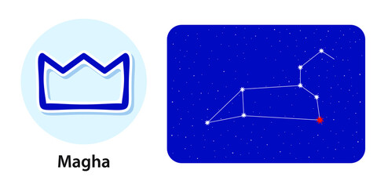

<
1. Pada 1st: The first pada of the Magha Nakshatra falls in the Aries Navamsa and is ruled by Mars. The people born in this pada are well respected in personal and professional life. They end up acquiring more wealth than others.
2. Pada 2nd: The second pada of the Magha Nakshatra falls in the Taurus sun sign Navamsa and is ruled by Venus. The people born in this pada are materialistic. They find their personality and purpose in life quite late.
3. Pada 3rd: The third pada of the Magha Nakshatra falls in the Gemini Navamsa and is ruled by Mercury. The people born in this pada are highly intelligent. They are highly educated, and their profession involves a high level of intellectual work.
4. Pada 4th: The fourth pada of the Magha Nakshatra falls in the Cancer Navamsa and is ruled by the Moon. The people born in this pada are emotional. Also, he gets more inclined toward his own interests, family, etc.
“the bountiful”Regulus
Lord: Ketu (south lunar node)
Symbol : Royal Throne
Deity : Pitrs, ‘The Fathers’, family ancestors
Stone: Cat’s eye is your lucky stone.
Lucky numbers : 1 and 7
Lucky days:Tuesday and Saturday
If a baby born in this nakshatra give her or him a name with starting letter “M”.
These persons should not live in East facing houses.
Persons born in Magha nakshatram will have good taarabalam with following nakshatrams:
Bharani, Rohini, Arudra, Pushyami, Aslesha, Pubba, Hasta, Swati, Anuradha, Jyesta, Purvashada, Sravanam, Satabisham, Uttarabhadra & Revati.
Indian zodiac: 0° – 13°20′ Simha
Western zodiac 26° Leo – 9°20′ Virgo
Magha Nakshatra
Characteristics male
The male born in the Magha Nakshatra is a multi-talented soul. These individuals are hard-working and don't shy away from trying new things in life. He has an emotional nature and deals with others with patience. Though always listening, but he doesn't like people who try to create nuisance in his life. He has a very particular taste in people and doesn't just fall for looks when it comes to love. Having an appealing character and a taste for humour is what will get you on his side. The kind nature of males born in Magha Nakshatra is not just for humans but anything around them. The native is God-fearing and thus weighs each and every action of his carefully. As he goes on to live his life, the native, however, ends up making many unknown enemies.Profession male
The male born in the Magha Nakshatra will have to wait till the age of 27 to find success in either work or business. However, these natives are likely to hail from well-to-do families and thus will not face issues such as lack of wealth. The native is also very hardworking but needs to use his potential correctly. The male born in Magha Nakshatra will likely change his career multiple times in life. This is a good thing as your next profession will always be better than the last. Also, make sure you don't get distracted in life when trying to work on building your career, as it will be fatal for you.Compatibility male
The male born in the Magha Nakshatra will have a very sound and comfortable married life. Your wife will be loyal and will also help with both your monetary and non-monetary responsibilities. Talking about children, likely two, you will be attached more to your first child. Also, you will share a very happening relationship with your mother in law and may also get monetary benefits from her. You will have 2-3 relationships in your whole life.Health male
The male natives born in the Magha Nakshatra must take care of themselves till the age of 15. Thereafter, it is unlikely that they will suffer from any major problems till the age of 55. Nevertheless, be cautious of problems that can lead to cancer, asthma, or epilepsy.Characteristics female
The female born in the Magha Nakshatra is also God-fearing, just like the male counterparts. However, they are not as calm. The female born in Magha Nakshatra is short-tempered and has a nature of quarrelling. The woman here is also fond of material comforts. However, she is not dependent on anyone to have them for herself. The woman born in Magha Nakshatra is capable enough to perform both her domestic and professional responsibilities. However, mostly she is dedicated to her professional goals and does well at it. She is spiritually inclined and helpful, and you will never be dissatisfied if you go to her asking for advice of any kind.Profession female
The female born in the Magha Nakshatra has a good professional career if she is educated enough. In fact, if the planet Jupiter finds a place in this nakshatra at the time of your birth, then no one can stop you from enjoying a successful profession and a lavish life. This placement of Jupiter allows the woman a very high post in her professional life. The effect of Jupiter is such that wealth gets attracted to her from all sides. She is also likely to get married to a very rich man and will lead a luxurious life. However, she must not rant about all such luxuries.Compatibility female
The female born in the Magha Nakshatra is quarrelsome and thus may become the cause of friction in the family of her husband. Such quarrels, if not controlled, can lead to stiffness between you and your husband. If you wish to counter such traits, you must try to fall in love and likely have a love marriage. As a person, you are very smart and transfer such qualities to your kids, thus ensuring they are more attached to you than anyone else.Health female
The females born in the Magha Nakshatra generally aren't prone to health issues. However, you must take special care of your eyes and head area. Also, any symptoms that can lead to problems such as hysteria, uterine trouble, blood disorders and jaundice must not be ignored. If not treated in time, they may create severe problems in the future.Ashwini Magha Padas
1. Pada 1st: The first pada of the Magha Nakshatra falls in the Aries Navamsa and is ruled by Mars. The people born in this pada are well respected in personal and professional life. They end up acquiring more wealth than others.
2. Pada 2nd: The second pada of the Magha Nakshatra falls in the Taurus sun sign Navamsa and is ruled by Venus. The people born in this pada are materialistic. They find their personality and purpose in life quite late.
3. Pada 3rd: The third pada of the Magha Nakshatra falls in the Gemini Navamsa and is ruled by Mercury. The people born in this pada are highly intelligent. They are highly educated, and their profession involves a high level of intellectual work.
4. Pada 4th: The fourth pada of the Magha Nakshatra falls in the Cancer Navamsa and is ruled by the Moon. The people born in this pada are emotional. Also, he gets more inclined toward his own interests, family, etc.